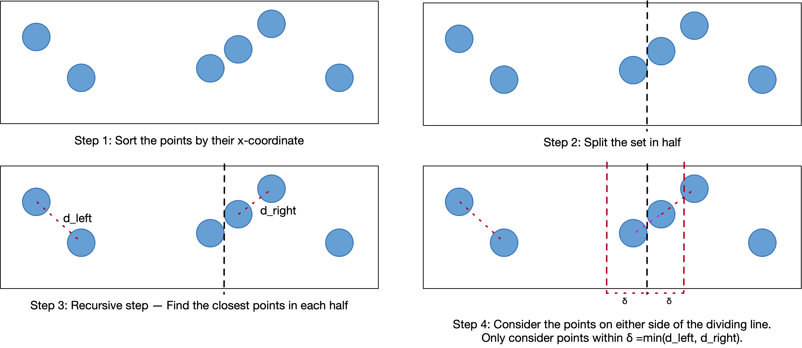

For this assignment, you will write a multi-process program that takes advantage of multiple CPU cores in parallel to solve the Closest Pair of Points Problem. You will use divide and conquer technics and combine it with multi-process programming to solve this assignment.
- This assignment will make up 10% of your final grade.
- No late submissions will be accepted after the due date. However, you are given a certain amount of tokens by which you can slightly extend the deadline of the assignment. Details about tokens can be found on the course website.
- If you have any questions or problems with the assignment, please post them on Piazza.
- Your submissions will be auto-graded. Therefore, your code must adhere to all details provided in the handout; otherwise, you might lose marks.
- You will not receive any feedback from the auto grader before the deadline has passed. So it is your responsibility to double-check your code with the handout before submission. Even minor spelling mistakes can lead to loss of marks. No remark requests will be accepted on these matters.
- You must verify that your submission compiles without any warnings and runs on a UTM MCS lab machine, as that is where we will be testing.
- Only the last version of your repository will be graded. Make sure that your last commit is the one you would like to be graded. It will not be possible to ask for a checkout to a different commit.
Assignments are individual work which means that you will not be allowed to seek advice from other students or copy/paste someone else's code, even open-source codes from the internet. However, you are allowed to look at online resources, tutorials, and Q&A websites to solve the problems. The entire code must be written by yourself.
The closest pair of points problem is a computational geometry problem that can be solved using a divide and conquer algorithm. As a reminder of what a divide-and-conquer algorithm is (from Wikipedia):
A divide-and-conquer algorithm works by recursively breaking down a problem into two or more sub-problems of the same or related type, until these become simple enough to be solved directly. The solutions to the sub-problems are then combined to give a solution to the original problem.
A high-level explanation of the problem is explained in this handout. A more detailed explanation is available in this PDF printout of Section 33.4 from Introduction to Algorithms by Cormen, Leiserson, Rivest, and Stein (CLRS). If you have any questions about the algorithm, to avoid clutter and to make the Piazza threads more useful for everyone, please avoid vague questions such as, "I don't understand Step X". Instead, please reference specific elements from the text in the handout or provided PDF file and ask a specific question about that text.
Given n points on a 2D plane, find the distance between the closest pair of points.
The naive solution can be implemented in just a few lines, by finding the distance between all pairs of points and returning the distance between the closest pair. This approach requires O(n^2) time.
The problem can be solved in O(nlogn) time using the following recursive divide and conquer approach:
- Sort the points in ascending order by their x-coordinates.
- Split the list of points into two equal-sized halves. This is like drawing a vertical line through the plane to divide the points into a left-hand-side and right-hand-side, each containing an equal number of points.
- Solve the problem recursively on the left and right halves.
- Find the distance between the closest pair of points where one point lies on the left-hand-side, and the other point lies on the right-hand-side. This can be done in linear time.
- The final answer is the minimum among the:
- Distance between the closest pair of points on the left-hand side.
- Distance between the closest pair of points on the right-hand side.
- Distance between the closest pair of points where one point is on the left-hand-side and the other point is on the right-hand side.
An illustration of the above steps is depicted below.
Note: Our implementation in this assignment is not exactly O(nlogn), as we do not adhere strictly to all the guidelines outlined in the CLRS text.
The starter code has the following structure:
Makefile, which you will notice contains a new flag,-fsanitize=signed-integer-overflow, as well as the-lmflag required for themathlibrary.main.ccontains the logic to:- Parse command-line arguments
- Either generate points or read them from a file
- Optionally save generated points to a file
- Sort the points with
qsort() - Call both the single-process and multi-process implementations to find the distance between the closest pair of points
- Measure the time taken by both the single-process and multi-process implementations
closest_tests.ccontains a test case to test the correctness of your implementation. You may use this as a skeleton to add additional test cases.closest_helpers.h,closest_brute.h,closest_serial.h, andclosest_parallel.hdeclare all the functions that you will implement.closest_helpers.c,closest_brute.c,closest_serial.c, andclosest_parallel.care where your implementations will go.
Your implementation (i.e., closest*.c) MUST work with the original Makefile, main.c, and closest*.h files supplied in your starter code. If you do modify them for testing purposes, be sure to reverse back to the original versions using git checkout COMMIT_ID FILENAME when running your final set of tests (check git log to find the commit ID of the starter code).
The closest_tests.c file is supplied only for your convenience, so you may modify it as you see fit. It will not be marked.
Your implementation should not print anything to stdout. The only data printed to stdout should be from the printf() calls supplied in main.c.
Any other information that you print for debugging purposes should be printed to stderr if your program is run in verbose mode (explained below). If the program is not in verbose mode, no output should be printed except for error messages before the program exits.
Notice that the header files declare two global variables:
curr_depthwill help you keep track of your number of processes.verboseis a boolean value, toggled using the-vcommand-line argument.
In verbose mode, any of your functions may print any additional debugging information of your choosing to stderr. We will not be testing your program in verbose mode.
You are to implement the algorithm in three different ways: the naive, single-process, and multi-process approaches. Further explanation on each part follows.
First, you must implement the naive algorithm, which requires that you implement:
double dist(struct Point, struct Point);(inclosest_helpers.c)double brute_force(struct Point P[], size_t n);(inclosest_brute.c)
Implementing the naive approach is a requirement for implementing the recursive approach described below. Specifically, the naive approach is used for solving the simplest instance (base case) of the problem, where only 2 or 3 points are given as input.
You may test your naive implementation using closest_tests.c.
Next, you must implement the single-process divide-and-conquer solution.
Your single-process implementation requires that you implement:
- The naive solution, as described above.
int compare_x(const void*, const void*);(inclosest_helpers.c)int compare_y(const void*, const void*);(inclosest_helpers.c)double combine_lr(struct Point P[], size_t n, struct Point mid_point, double d);(inclosest_serial.c)double _closest_serial(struct Point P[], size_t n);(inclosest_serial.c)double closest_serial(struct Point P[], size_t n);(inclosest_serial.c)
All functions above will be re-used when completing the next part of your assignment, which is to write your multi-process solution.
Your multi-process implementation requires that you implement:
- The naive solution and single-process recursive solution, as described above.
double _closest_parallel(struct Point P[], size_t n, int pdmax, int *pcount);(inclosest_parallel.c)double closest_parallel(struct Point P[], size_t n, int pdmax, int *pcount);(inclosest_parallel.c)
There are no special requirements for the naive solution, aside from the correct implementation of the algorithm.
Implement the algorithm as described earlier in this handout, under the "Recursive divide-and-conquer approach" section.
We will check for compliance with all the following requirements. No credit will be given to submissions that violate these requirements (e.g., not using qsort(), or implementing the naive solution instead of the divide-and-conquer solution).
The closest_serial() function should first sort the points, using qsort(), in ascending order by their x-coordinates. It should then call _closest_serial().
The _closest_serial() function should:
- Find the middle point,
p_mid, by x-coordinate. This is easy since the points should already be sorted by x-coordinate. - Split the array of points into two equal-sized halves. The left half should consist of elements
0to the floor ofn/2(i.e., ifnis odd, the right half will consist of one more point). - Solve the problem on the left and right halves:
- If one or both of the halves consist of 3 points or fewer, call
brute_force()to find the solution. This is the "stop condition" of your recursive function. - Otherwise, make two recursive calls to
_closest_serial()(for the left half and the right half).
- If one or both of the halves consist of 3 points or fewer, call
- Let
dlbe the distance between the closest pair of points on the left-hand side, anddrbe the distance between the closest pair of points on the right-hand side. Letdbe the minimum amongdlanddr. - Find the distance between the closest pair of points where one point lies on the left-hand-side and the other point lies on the right-hand-side. Do this by calling
combine_lr(), passing in the array ofnpoints, along withdandp_mid. This function implements the following linear-time solution:- Build an array consisting of points where for each point
p_i,abs(p_i.x - p_mid.x) < d. - Sort the points with
qsort()by their y-coordinate.- There exists a more efficient solution where this step can be avoided. But we are skipping that optimization for simplicity.
- For each point in the array
p_i, find the distance between it and each subsequent pointp_jwherep_j.y - p_i.y < d.- Although this is implemented with a nested loop, and thus appears to be an O(n^2) solution at first glance, it is actually a linear-time solution, since it is proven that, for each point, the distance only needs to be computed for (at most) the next 7 points in the list that is sorted by y-coordinate. (See the CLRS pdf for details)
- Return the smaller of
dor the smallest distance found in the previous step.
- Build an array consisting of points where for each point
- The final answer is the minimum among the:
- Distance between the closest pair of points on the left-hand side,
dl. - Distance between the closest pair of points on the right-hand side,
dr. - Distance between the closest pair of points where one point is on the left-hand-side and the other point is on the right-hand side.
- Distance between the closest pair of points on the left-hand side,
We will check for compliance with all the following requirements. No credit will be given to submissions that violate these requirements (e.g., implementing a single-process solution, or not using pipes to communicate between processes).
The closest_parallel() function should first sort the points, using qsort(), in ascending order by their x-coordinates. It should then call _closest_parallel().
The following logic specifies the requirements for the creation of and the co-ordination between the worker processes by _closest_parallel():
- Sort the array of
npoints, by their x-coordinates, in ascending order. - Let
pdmax = pdepth, wherepdepthis the maximum depth of the process tree, specified by the argument of the command-line option-d. - If
n <= 3, orpdmax == 0, invoke_closest_serial()to obtain the answer without creating any child processes. This is the stop condition for the recursive function_closest_parallel().- Note: When making the recursive call, you must set the appropriate value for
pdmaxto ensure that the stop condition is reached and that the correct number of processes is created.
- Note: When making the recursive call, you must set the appropriate value for
- Otherwise, split the array of points into two equal-sized halves. The left half should consist of elements
0to the floor ofn/2(i.e., ifnis odd, the right half will consist of one more point). - Create two child processes to solve the left half and right half of the problem:
- Create a pipe, which the first child process will use to communicate with its parent (i.e., the current process).
- Fork a child, which will:
- Invoke
_closest_parallel()on the left half of the array (elements0tofloor(n/2)), to obtain the distance between the closest pair of points on the left-hand side. - Send the return value (i.e., distance between the closest pair of points) back to the parent process by writing it to the pipe.
- Exit with the appropriate status (consult text below the process tree diagram).
- Invoke
- Create a pipe, which the second child process will use to communicate with its parent (i.e., the current process).
- Fork a second child, which will:
- Invoke
_closest_parallel()on the right half of the array (elementsfloor(n/2)+1ton-1), to obtain the distance between the closest pair of points on the right-hand side. - Send the return value (i.e., distance between the closest pair of points) back to the parent process by writing it to the pipe.
- Exit with the appropriate status (consult text below the process tree diagram).
- Invoke
- Wait for both child processes to complete (each process should have only two child processes).
- Read from the two pipes to retrieve the results from the two child processes.
- Follow step 5 from the single-process recursive solution to determine the distance between the closest pair of points with distance smaller than
d, where one point is in the left half of the array and one point is in the right half of the array. - The final answer is the minimum among the:
- Distance between the closest pair of points on the left-hand side, found by the first child process.
- Distance between the closest pair of points on the right-hand side, found by the second child process.
- Distance between the closest pair of points where one point is on the left-hand-side and the other point is on the right-hand side.
Let current_depth be the depth of the current process in the process tree. The parent process is at depth 0. The first two children have depth 1, and so on. An illustration is depicted below.

Each child process in your program should terminate with an exit status equal to:
- the number of descendent (i.e., child, grandchild...) processes that the terminating process forked; or
1, in case of an unrecoverable error (e.g., a failed system call, or if a child process terminated with exit status1).
A static variable is defined for you in _closest_parallel(): You will need it for keeping count of the number of descendent processes that were forked. See Section 2.9 of the GNU C Reference Manual for more on static variables.
The parent process should exit(0) upon success, or exit(1) upon failure (but this is already done in main.c).
Is there a point at which adding more processes starts to hurt performance? Why do you think that is the case? You do not have to submit your answer to these questions, but it is an educational experiment and useful thought exercise.
Debugging multi-process programs can be difficult. Here are some useful tips for how to do so:
- It is possible to debug a multi-process program with
gdb, using either of two techniques described in the GDB manual. If you use thesleep()technique, it may be more convenient to do it only with the-vflag enabled (so that you can still test your program normally when running without the-vflag). - The
straceandltracetools will prove invaluable. These tools trace your program's execution and print out every system call or library call (respectively) that your program makes. There are some common errors that are easily detectable using these tools. For example, your program may stall indefinitely due to a parent process invokingread()on an empty pipe that the child process has not closed. - You may find the
assert()function helpful (seeman 3 assertfor details). You may invokeassert()throughout your code to identify cases where your variables hold unintended values. This is often a more convenient alternative to usingprintf()to print the contents of all your variables throughout your code.
Finally, remember that this is systems programming, which means you must properly handle many corner cases. Ensure that you deal correctly with all data types, e.g., by paying attention to the range of valid values that each type can hold.
For example, see what the GNU C Reference Manual says about the size_t type:
The size_t type is often a convenient type for a loop index, since it is guaranteed to be able to hold the number of elements in any array; this is not the case with int, for example.
You may also check the maximum and minimum values for various types and return values through macros defined in different header files. For example, use macros defined in limits.h for finding minimum and maximum values of integer types, macros defined in float.h for finding minimum and maximum values of floating-point types, or macros defined in stdlib.h for finding the maximum value of randomly-generated integers. You may observe that some of these macros are already used in the main.c starter code.
Notice also that the program generates integer values for the x- and y-coordinates of the points, but calculates distance as floating-point values.
Submit closest_helpers.c, closest_brute.c, closest_serial.c,closest_tests.c, and closest_parallel.c. Verify that your submission compiles and runs on a UTM MCS lab machine, as that is where we will be testing.
Note that you must submit your work to your git repository on Markus. That is, you cannot submit through its normal web interface.
This is my fourth time taking CSC209, and inarguably, this is the best assignment I've ever seen.
Problems are so accurately designed that anyone with their own knowledge and experience have their own takeaways.
I hope next assignments will be this good, too!
Thanks bro!